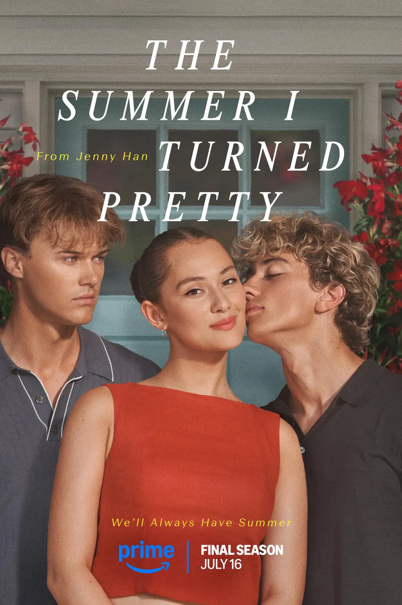

The Summer I Turned Pretty
Sinopse
The Summer I Turned Pretty é americano amadurecimento drama romântico série de televisão criada pelo autor Jenny Han para Vídeo Amazon Prime. É baseado nela trilogia de romances: O verão em que fiquei bonita, Não é verão sem você, e Sempre teremos verão. Lola Tung estrela como Belly Conklin, um adolescente envolvido em um triângulo amoroso com os irmãos Conrad e Jeremiah, interpretado por Cristóvão Briney e Gavin Casalegno, respectivamente.
A produção da série de TV começou em 2021. Estreou em 17 de junho de 2022, com a primeira temporada composta por sete episódios. Antes de sua estreia, a série foi renovada para uma segunda temporada, que estreou em 14 de julho de 2023 e inclui oito episódios. Em agosto de 2023, a série foi renovada para uma terceira temporada. A terceira e última temporada de 11 episódios estreou em 16 de julho de 2025. Um longa-metragem foi anunciado após a conclusão da série em 17 de setembro de 2025 e deve servir como uma continuação direta do final da série.

Elenco e personagens
Principal
-
Lola Tung como Isabel "Belly" Conklin: Psicóloga esportiva; filha de Laurel e John; irmã de Steven; namorada de Conrad (temporadas 1–3)
-
Jackie Chung como Laurel Park: Autora; melhor amiga de Susannah; ex-esposa de John; mãe de Belly e Steven (temporadas 1–3)
-
Rachel Blanchard como Susannah Fisher: Pintora; melhor amiga de Laurel; esposa de Adam; mãe de Conrad e Jeremiah (temporadas 1–2)
-
Cristóvão Briney como Conrad Fisher: estudante de medicina em Stanford; filho de Susannah e Adam; irmão de Jeremiah; namorado de Belly (temporadas 1–3)
-
Gavin Casalegno como Jeremiah Fisher: Chef; filho de Susannah e Adam; irmão de Conrad; namorado de Denise (temporadas 1–3)
-
Sean Kaufman como Steven Conklin: filho de Laurel e John; irmão de Belly; namorado de Taylor (temporadas 1–3)
-
Alfredo Narciso como Cleveland Castillo: Autor; mentor de Conrad; aventura de Laurel (temporadas 1–2)
-
Minnie Moinhos como Shayla Wang: influenciadora de moda; ex-namorada de Steven (1a temporada)
-
Chuva Spencer como Taylor Jewel: Estudante em Finch; Filha de Lucinda; Melhor amiga de Belly; Namorada de Steven (temporadas 1–3)
-
Colin Ferguson como John Conklin: professor de história; ex-marido de Laurel; pai de Belly e Steven (temporadas 1–3)
-
Tom Everett Scott como Adam Fisher: capitalista de risco; fundador da Breaker Capital; viúvo de Susannah; pai de Conrad e Jeremiah; namorado de Kayleigh (temporadas 1–3)
-
Elsie Fisher como Skye Beck: filha de Julia; prima de Conrad e Jeremiah (2a temporada)
-
Kyra Sedgwick como Julia Beck: irmã de Susannah; mãe de Skye; tia de Conrad e Jeremiah (2a temporada)
-
Isabella Briggs como Denise Russo: Associada sênior da Breaker Capital; namorada de Jeremiah (3a temporada)
-
Kristen Connolly como Lucinda Jewel: mãe de Taylor (3a temporada)
Recorrente
-
David Iacono como Cameron: ex-namorado de Belly (temporadas 1–2)
-
Summer Madison como Nicole Richardson: amiga de Belly; antiga aventura de Conrad (temporadas 1–2)
-
Sofia Bryant como Anika: colega de quarto e amiga de Belly (3a temporada)
-
Lírio Donoghue como Lacie Barone: a aventura de Jeremiah com quem ele dormiu enquanto namorava Belly; membro da irmandade de Taylor (3a temporada)
-
Zoé De Grand Maison como Agnes: estudante de medicina em Stanford; amiga de Conrad (3a temporada)
-
Emma Ishta como Kayleigh, secretária e namorada de Adam (3a temporada)
-
Tanner Zagarino como Redbird: amigo e companheiro de fraternidade de Jeremiah (3a temporada)
Episódios
Informações de Lançamento da Série
| Temporada |
Episódios |
Originalmente exibido |
| Estreia da temporada |
Final da temporada |
| 1 |
7 |
17 de junho de 2022 |
| 2 |
8 |
14 de julho de 2023 |
18 de agosto de 2023 |
| 3 |
11 |
16 de julho de 2025 |
17 de setembro de 2025 |
Produção
Em 8 de fevereiro de 2021, a Amazon deu à produção um pedido de série composto por oito episódios. A série é baseada em o romance homônimo de 2009 por Jenny Han. Foi criado por Han, que também atua como showrunner e produtor executivo. Também os produtores executivos são Gabrielle Stanton, Karen Rosenfelt, Nne Ebong e Hope Hartman. Stanton também é co-showrunner da primeira temporada. Em 8 de junho de 2022, antes da estreia da série, a Amazon renovou a série para uma segunda temporada, com Han e Sarah Kucserka como co-showrunners. Em 3 de agosto de 2023, antes do final da segunda temporada, a série foi renovada para uma terceira temporada, com Han e Kucserka retornando como showrunners. Em 17 de setembro de 2025, dia do lançamento do final da série, um longa-metragem recebeu sinal verde para concluir a história no Amazon Prime Video, com Han atuando como roteirista ao lado de Kucserka. Han também deve dirigir o filme.
Em 28 de abril de 2021, Lola Tung, Rachel Blanchard, Jackie Chung e Cristóvão Briney foram escalados como regulares da série. Em julho de 2021, Gavin Casalegno, Sean Kaufman, Minnie Moinhos, e Alfredo Narciso juntou-se ao elenco principal, enquanto Summer Madison, David Iacono, Chuva Spencer, e Tom Everett Scott juntou-se ao elenco em papéis recorrentes. Em 31 de agosto de 2022, Kyra Sedgwick e Elsie Fisher foram escalados para papéis recorrentes na segunda temporada. Em 20 de abril de 2023, Mills anunciou que havia saído da série antes da segunda temporada. Em 4 de junho de 2025, foi relatado que Isabella Briggs e Kristen Connolly foram escalados como novos regulares da série, enquanto Sofia Bryant, Lírio Donoghue, Zoé de Grand'Maison, Emma Ishta, e Tanner Zagarino em funções recorrentes na terceira temporada.
As filmagens principais da primeira temporada ocorreram em 2021 em Wilmington, Carolina do Norte, locais incluídos Praia da Carolina, Fort Fisher e a estação Padgett da Wave Transit na N. 3rd Street. As filmagens da segunda temporada começaram em julho de 2022 e terminaram em novembro de 2022.
Os membros do elenco confirmaram que as filmagens da terceira temporada estavam inicialmente programadas para começar em 2023. No entanto, acabou sendo adiado devido ao Guilda dos Escritores e Greves SAG-AFTRA que aconteceu de maio a novembro de 2023. No final de janeiro de 2024, foi confirmado que a terceira temporada havia entrado em pré-produção na área de Wilmington, com previsão de início na primavera. Em 14 de maio de 2024, foi anunciado que a terceira temporada havia começado a ser filmada.
Lançamento
A série estreou em Vídeo Prime em 17 de junho de 2022. Os três primeiros episódios da segunda temporada estrearam em 14 de julho de 2023, com os cinco episódios restantes lançados semanalmente até o final em 18 de agosto de 2023. Antes do lançamento da terceira e última temporada, o Prime Video carregou a primeira e a segunda temporadas do programa gratuitamente em YouTube. A terceira e última temporada de 11 episódios estreou em 16 de julho de 2025, com dois novos episódios, seguidos por um novo episódio semanalmente até o final da série em 17 de setembro de 2025.
Recepção
Temporada 1
Para a primeira temporada, o agregador de revisão site Tomates podres relatou um índice de aprovação de 88% com uma classificação média de 7,1/10, com base em 24 avaliações críticas. O consenso dos críticos do site diz: "O verão em que fiquei bonita não precisa de mais tempo para se tornar um cisne, saindo do portão uma comédia romântica solidamente charmosa e doce, com apelo entre gerações." Metacrítico, que utiliza uma média ponderada, atribuiu uma pontuação de 72 em 100 com base em 8 críticos, indicando "avaliações geralmente favoráveis".
Temporada 2
A segunda temporada tem um índice de aprovação de 62% Tomates podres, com base em 13 avaliações de críticos, com uma classificação média de 6,5/10. Em Metacrítico, a segunda temporada recebeu uma pontuação de 71 com base em avaliações de 6 críticos, indicando "críticas geralmente favoráveis".
Temporada 3
A terceira temporada tem um índice de aprovação de 83% Tomates podres, com base em 6 avaliações críticas.